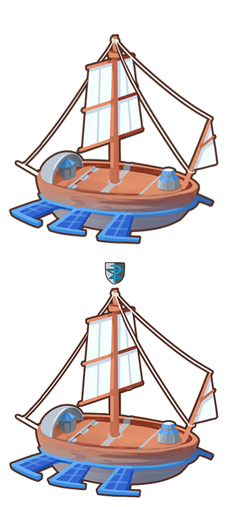
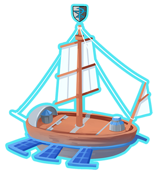
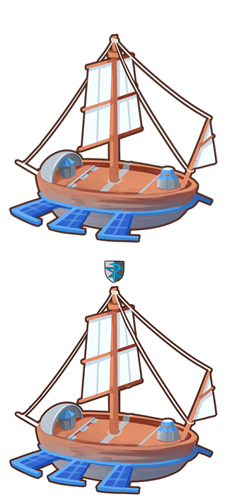
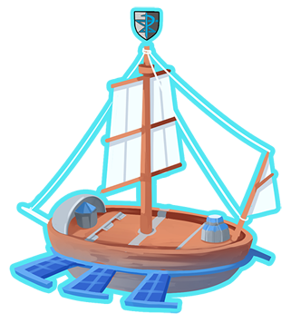

那幾個鬼鬼祟祟的銀河隊隊員跑進這個洞窟就不見了，這個洞窟裡到底有甚麼祕密？
ーー未知圖騰靜靜躺在岩壁上似乎正默示著解答...
『◆ = _ _ _ _ _ _ _ _ _ _ _ 』
想要追上那幾個火箭隊員，結果對方逃跑得太快，只來得及抓到他慌忙間不小心留下的包包。
ーー快點找到被他們搶走的皮卡丘在哪裡吧！感覺可以找到線索。
『☆ = _ _ _ _ _ 』
明明跟N約好在這裡見面，到底跑哪裡去了......咦，那不是電漿團的人嗎？他們在看甚麼？
ーー冰山上的字...難道是N留下來的訊息？池面上似乎有什麼線索...
『◎ = _ _ 』
來到了海邊，怎麼好像聽到有人在爭吵.......？
水梧桐「我只要7天的時間，就能把全豐緣的陸地變成海洋。」
赤焰松「用不著七天，只要比你短2天的時間我就能把全豐緣的海洋變成陸地。」
水梧桐「哼，只要兩倍你把豐緣變成陸地的時間，我就可以把全豐緣跟全城都的陸地都變成海洋。」
赤焰松「那算什麼， 只要再多6天，我就能把全豐緣跟全城都的海洋都變陸地，還能喚醒列空坐。」
水梧桐「聽你在吹牛吧，我只要用你剛剛開根號乘以十的時間，就能把豐緣跟城都跟關都跟神奧的陸地都變海洋！」
赤焰松「真是遺憾，只要剛剛你說的一半時間，我就能把豐緣跟城都跟關都跟神奧的海洋都變陸地，還能收服蓋歐卡、固拉多跟列空坐！」
水梧桐「不要太囂張了！只要比你再多一週的時間，我就能把連合眾地區跟卡洛斯地區在內，所有的陸地都變成海洋！」
真是太誇張了，這兩人到底在說什麼！
怎麼可能只花▲天就把所有地區的陸地都變成海洋呢，看來還是在沒被發現前離開吧。
『▲ = _ _ 』
法桐博士「真是太奇怪了，我怎麼都算不出來這格是甚麼」
弗拉達利「連你也解不出來？我看看」
ーー看來博士正為了報紙上的數獨十分困擾，不如來幫幫博士的忙吧？
『 = _ 』
OOPS！
請使用電腦開啟、並於1280*768解析度以上環境瀏覽。